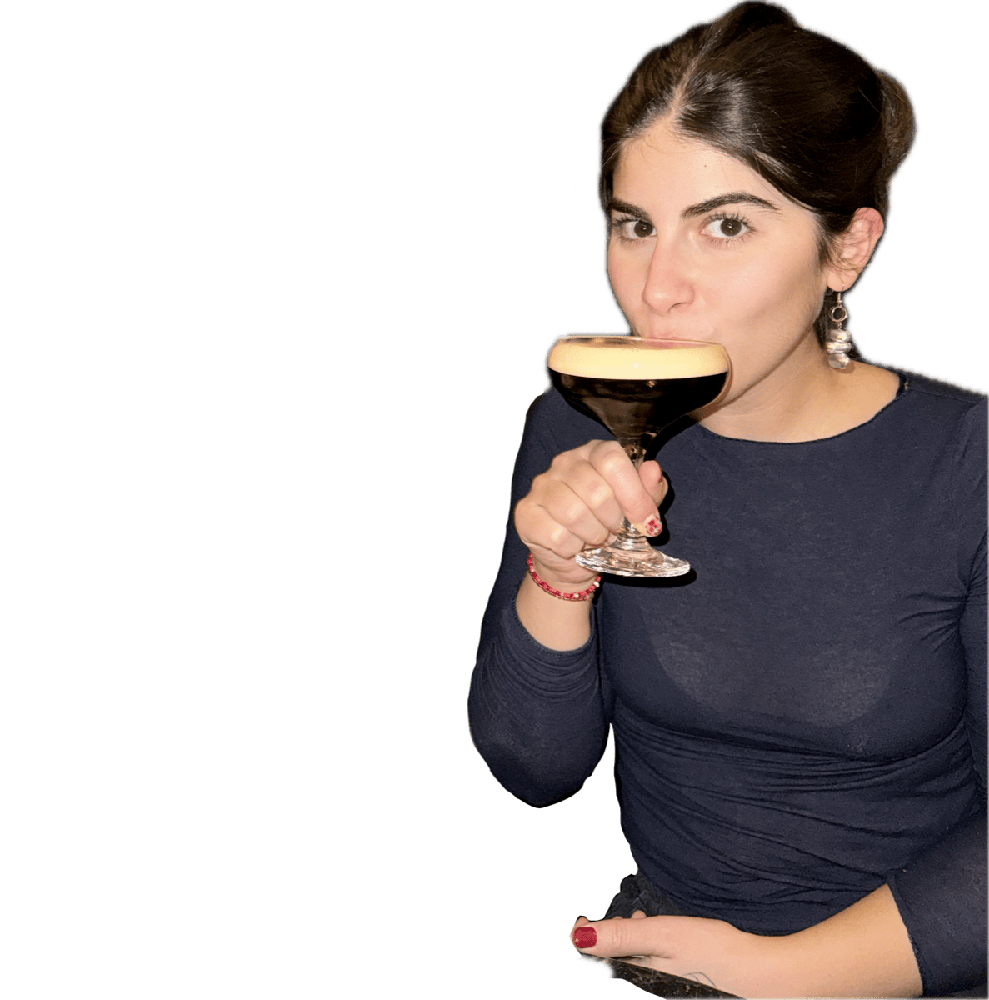

Hi! I'm Tuana :)
I'm a cinematographer based in Berlin, working mainly on short films and fashion and music-related videos. I love shaping a frame and figuring out how a story should feel, not just what it should say.
What matters to me just as much as the visual side is who I make images for and about. As a woman working behind the camera, I care deeply about pushing the female gaze forward.
So if you have a project in mind, let's chat :)
Contact me